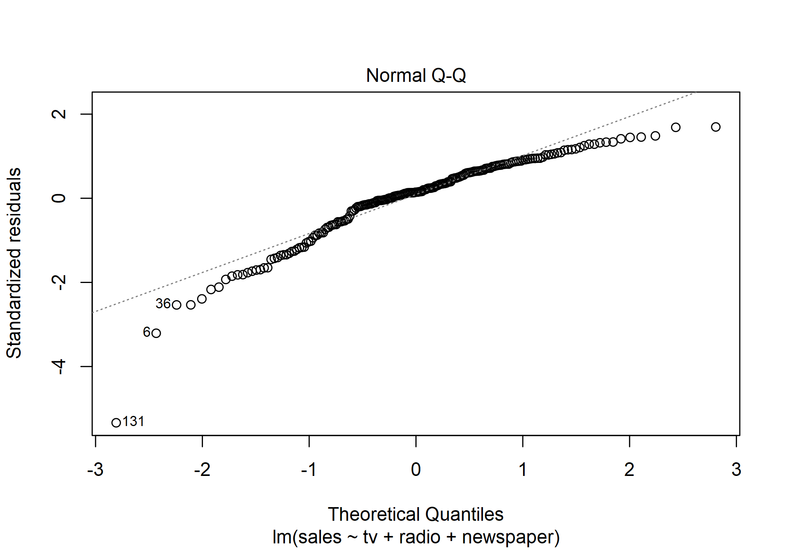
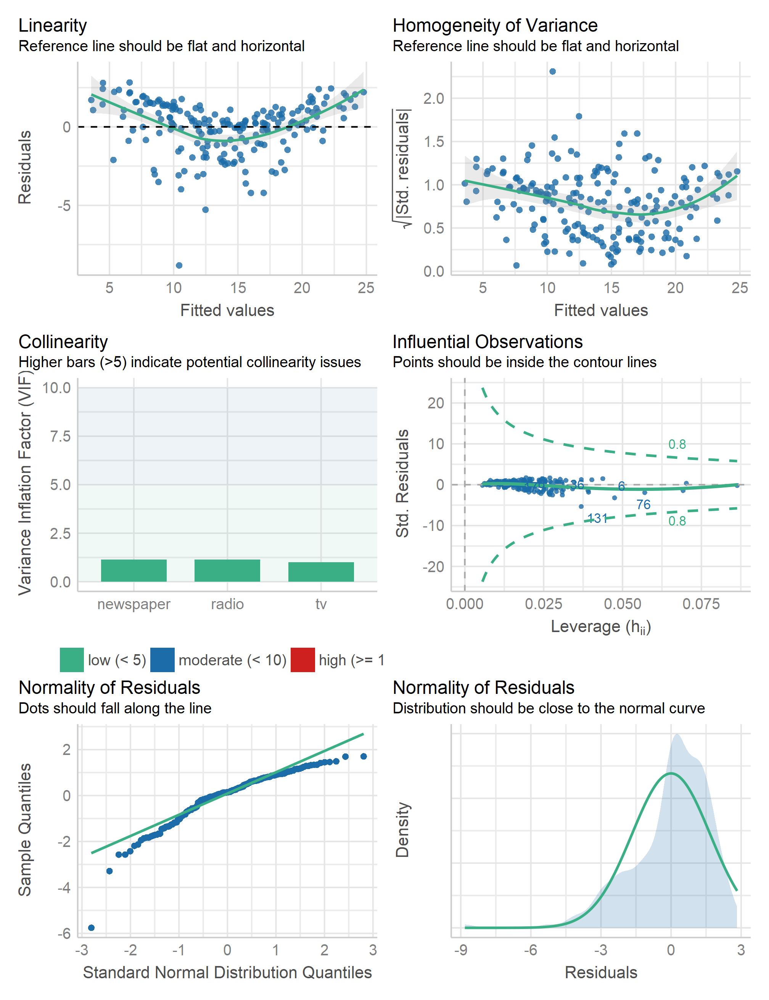
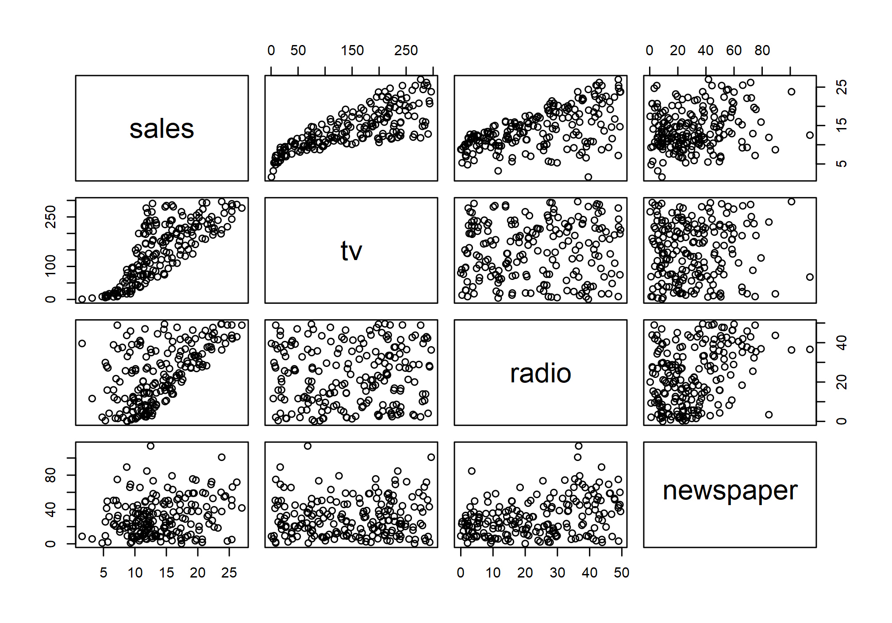

TL;DR multiple linear models, multicollinearity, and ANOVA.
Caution! Please note that all labs assume that you are working in an RStudio Project directory!
This lab will guide you through the process of
plot.data.frame()cor()vif()We will be using the following packages:
To install these packages, run the following code in your console:
install.packages(
c("archdata", "car", "dplyr", "ggplot2", "here", "performance")
)Note: You should not install.packages() in an Rmd document. Use that function in your R console instead. Then use library() as part of the preamble in your Rmd document to check packages out of the library and use them in that R session. This should always go at the start of your document!
library(archdata)
library(car)
library(dplyr)
library(ggplot2)
library(here)
library(ISLR2)
library(performance)
library(skimr)Boston
ISLR2HandAxes
archdatapenguins
palmerpenguinsWe’ll be working with the advertising dataset used in the textbook An Introduction to Statistical Learning With Applications in R. The website for this book hosts many of the datasets it uses. The others you can find in the companion R packages (ISLR and ISLR2, for the first and second editions, respectively). You can download this data then load it into R like so:
fn <- here("data", "advertising.csv")
download.file(
url = "https://www.statlearning.com/s/Advertising.csv",
destfile = fn
)
adverts <- read.csv(fn)
remove(fn)You can actually do this directly with read.csv("https://www.statlearning.com/s/Advertising.csv"), but the round-about way allows you to practice saving and loading data with here().
Now, have a look at some summaries of the data with skim().
skim(adverts)| Name | adverts |
| Number of rows | 200 |
| Number of columns | 4 |
| _______________________ | |
| Column type frequency: | |
| numeric | 4 |
| ________________________ | |
| Group variables | None |
Variable type: numeric
| skim_variable | n_missing | complete_rate | mean | sd | p0 | p25 | p50 | p75 | p100 |
|---|---|---|---|---|---|---|---|---|---|
| sales | 0 | 1 | 14.0 | 5.22 | 1.6 | 10.38 | 12.9 | 17.4 | 27.0 |
| tv | 0 | 1 | 147.0 | 85.85 | 0.7 | 74.38 | 149.8 | 218.8 | 296.4 |
| radio | 0 | 1 | 23.3 | 14.85 | 0.0 | 9.97 | 22.9 | 36.5 | 49.6 |
| newspaper | 0 | 1 | 30.6 | 21.78 | 0.3 | 12.75 | 25.8 | 45.1 | 114.0 |
Notice that the dataset has four variables: sales, tv, radio, and newspaper. The sales variable refers to the number of units (in thousands) sold in a given market. The other three variables refer to investments (in thousands of dollars) in different advertising media.
In this section, we will walk through how to build a multiple linear model in R. This is not fundamentally different than building a simple linear model. The only difference is that we need to update the model formula. For the simple linear model, the formula is just y ~ x, for the multiple linear model, it’s y ~ x1 + x2 + ... + xn. We simply add the covariates together using the plus-sign. Let’s work through an example with the adverts table. We want to know whether investment in different advertising media increases sales of some product.
adverts_lm <- lm(sales ~ tv + radio + newspaper, data = adverts)
summary(adverts_lm)
##
## Call:
## lm(formula = sales ~ tv + radio + newspaper, data = adverts)
##
## Residuals:
## Min 1Q Median 3Q Max
## -8.828 -0.891 0.242 1.189 2.829
##
## Coefficients:
## Estimate Std. Error t value Pr(>|t|)
## (Intercept) 2.93889 0.31191 9.42 <2e-16 ***
## tv 0.04576 0.00139 32.81 <2e-16 ***
## radio 0.18853 0.00861 21.89 <2e-16 ***
## newspaper -0.00104 0.00587 -0.18 0.86
## ---
## Signif. codes: 0 '***' 0.001 '**' 0.01 '*' 0.05 '.' 0.1 ' ' 1
##
## Residual standard error: 1.69 on 196 degrees of freedom
## Multiple R-squared: 0.897, Adjusted R-squared: 0.896
## F-statistic: 570 on 3 and 196 DF, p-value: <2e-16Note the change in how we interpret the coefficients! Each coefficient must be interpreted relative to some value of the other covariates. For example, the coefficient estimate for television is 0.046. We interpret this as saying, “For some given investment in radio and newspaper advertising, increasing tv advertising by $1000 will increase the number of units sold by approximately 46 units (because the units are measured in thousands, so 1000 x 0.046).”
Boston dataset from the ISLR2 package with data().select() function from dplyr. Choose all the following variables:
medv = median household valuerm = number of roomscrim = per capita crime ratelstat = percent of households with low socioeconomic statusskim().medv) as a function of average number of rooms (rm).
simple_lm.medv) as a function of average number of rooms, per capita crime rate, and percent of household with low socioeconomic status (rm, crim, and lstat, respectively).
boston_lm.summary().
As always, we can use the base plot() function to check model assumptions, using the which argument to specify the type of plot we want to make. For example, we can make a Q-Q plot like so:
plot(adverts_lm, which = 2)
Or, we can use the check_model() function from the performance package.
check_model(adverts_lm)
How does it look? Have we met the assumptions of linear regression?
residuals() to get the residuals out of the model object.geom_histogram().check_model() on boston_lm.As always, we want to check whether adding variables actually makes a significant improvement on the model. To do that, we need to compare the complex model to a simpler model. In R, we do that with the anova() function. Suppose, for example, we had made this simple linear model:
adverts_simple <- lm(sales ~ tv, data = adverts)Then we can compare the more complex model to it like so:
anova(adverts_simple, adverts_lm)
## Analysis of Variance Table
##
## Model 1: sales ~ tv
## Model 2: sales ~ tv + radio + newspaper
## Res.Df RSS Df Sum of Sq F Pr(>F)
## 1 198 2103
## 2 196 557 2 1546 272 <2e-16 ***
## ---
## Signif. codes: 0 '***' 0.001 '**' 0.01 '*' 0.05 '.' 0.1 ' ' 1Note that the simpler model is a subset of the more complex model (ie, these are nested models)! The ANOVA woudn’t work otherwise! The interpretation of this ANOVA table is as follows. The degrees of freedom (DF) represents the difference in residual degrees of freedom (Res.Df) between the simple and complex models. The sum of squares (Sum of Sq) is the difference in the Residual Sum of Squares (RSS) for each model. The F statistic is then the following ratio:
\[F = \frac{\text{Sum of Sq}/\text{Df}}{\text{RSS}_2/\text{Res.Df}_2}\]
This is then compared to an F distribution with the degrees of freedom to determine how likely that particular value is, assuming the null hypothesis that there is no significant improvement. Because it is extremely unlikely, we reject the null and accept the alternate hypothesis, which - in a word - is that the more complex model is better (in spite of its complexity).
anova() function to compare simple_lm to boston_lm.
Linear regression assumes that the predictor or independent variables are uncorrelated. However, this is often not the case. To evaluate this assumption, you can do one of two things. I actually recommend that you always do both. First, you can check for pairwise correlations visually with the pairs() function from base R or analytically with the cor() argument. Both work with tables. Second, you check for multicollinearity using the vif() function to estimate the Variance Inflation Factor for each covariate.
pairs(adverts)
cor(adverts)
## sales tv radio newspaper
## sales 1.000 0.7822 0.5762 0.2283
## tv 0.782 1.0000 0.0548 0.0566
## radio 0.576 0.0548 1.0000 0.3541
## newspaper 0.228 0.0566 0.3541 1.0000Notice that pairs() generates a scatterplot matrix with all pairwise combination of variables. If there’s no correlation, the scatterplot should look like a cloud of random points. If there is a correlation, the points will cluster along some line. The cor() function generates a correlation matrix (by default a Pearson’s correlation matrix). Of course, every variable correlates perfectly with itself, hence a value of 1 along the diagonal. Values above and below the diagonal are simply mirrors of each other, as is the case with the scatterplot matrix. The fact that each variable correlates with sales is not problematic in this case, as that is the relationship we are trying to model. What we want to focus on here is the degree of correlation between the predictors tv, radio, and newspaper. It is preferable that the correlations between these be as close to zero as possible, but again, it will rarely be the case that they are exactly zero.
Generally, it’s a good idea to test for correlations between predictors before building a model. However, the vif() function only works on model objects, which makes sense as the variance being inflated is variance around coefficient estimates made by the model. That means, of course, that you have to build a model first before evaluating its covariates for multicollinearity. Using the linear model we made with the advertising data, that looks like this:
vif(adverts_lm)
## tv radio newspaper
## 1.00 1.14 1.15This generates a named vector, with one value for each covariate. A general rule of thumb is that VIF for a coefficient should be less than 5. After that, you should consider changes to your model.
pairs() on the Boston data to visualize pairwise relationships between variables.
cor() on the Boston data to estimate the Pearson correlation coefficient for each pair of variables.
vif() on the bostom_lm model to estimate the Variance Inflation Factor for each covariate.
Handaxes dataset from the archdata package using data().names(). You should see maximum length (L), breadth (B), and thickness (T), among others.select() to subset this table, taking only those three variables (length, breadth, and thickness).skim().pairs().cor().summary() to report the model.predict() and geom_line() to visualize the modeled relationship. Be sure to plot this over the data!geom_ribbon().check_model() to visually inspect the model.summary() to report the model.check_model() to visually inspect the model.vif() function on the multiple linear model.
anova() function to compare the simple and complex models.